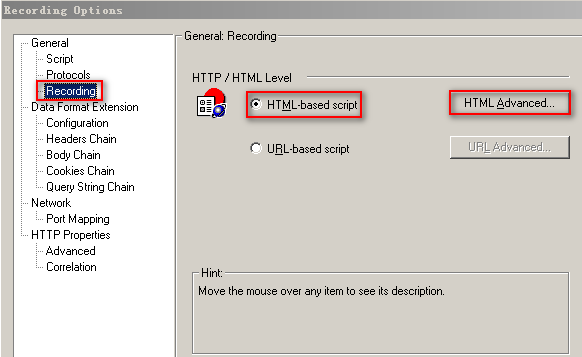
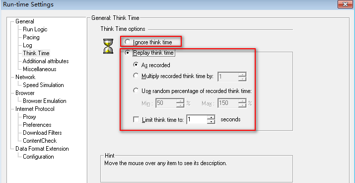

VuGen-扩展(录制、回放)
目标
1. 了解录制模式和脚本类型
2. 了解 Run-time Settings（运行时设置）
一、录制选项-扩展

在录制设置的时候，有一个 Options 选项按钮，它有什么作用呢？
1.1 录制设置Options选项

1. HTML-based script: 所有请求放到一个函数内（这里所有请求是指，每步操作所产生的请求）
2. URL-based script: 每个请求放到一个函数
提示：
1). 基于浏览器的应用程序推荐使用 HTML-based script
2). 不是基于浏览器的应用程序推荐使用 URL-based script
3). 基于浏览器的应用程序中使用了 HTTPS 安全协议，使用 URL-based script 方式录制
备注：为了学习效果，在这里我们先介绍重点功能，其他功能需要使用的时候我们再进行讲解
1.2 HTML Advanced选项

1. web_submit_form: 依赖上下文才能提交。
2. web_submit_data: 不依赖上下文，每个函数都指定了具体的 URL 地址，可以直接提交成功。【推荐】
提示：没有特殊的场景需求，推荐使用：web_submit_data
思考
如何设置脚本运行次数？
二、运行设置
1. Run-time Settings
(菜单-Vuser -> Run-time Settings) 快捷键：F4
2.1 Run-time Settings
1. Run Logic 脚本运行迭代次数
2. Think Time 运行时思考时间处理方式
1. RunLogic 迭代次数

提示：
1. 迭代就是脚本要执行的次数
2. Init 与 End 由于只会运行一次，迭代次数设置不会生效
2. Think Time 思考时间

提示：
1. Ignore think time 默认(忽略思考时间)
2. Replay think time (回放思考时间)
1). As recorded (录制多少秒，就等待多少秒)
2). MuItiply recorded think time by (录制时间的倍数)
3). Use random percentage of recorded think time
( Min(录制时间的最小百分比) Max(录制时间的最大百分比))
4). Limit think time to(限制最高时间)
提示：
为了更好的理解迭代与Think Time设置，我们在这里先学习2个常用的函数，方便我们快速运行、查看执行效果;
2.2 常用函数
1. lr_output_message()
2. lr_think_time()
1) 函数 lr_output_message()
说明：输出到运行日志 如：lr_output_message("hello Action");
参数：要输出的文本信息
2) lr_think_time()
说明：思考时间 最大可能模仿用户真实操作 如：lr_think_time(4);
参数：停顿多少秒
练习
1. 输出Action被执行10次，使用迭代次数完成；
2. 输出Action1被执行暂停3秒后，输出Action2被执行；
练习脚本
Action()
{
lr_output_message("Action1被执行");
lr_think_time(3);
lr_output_message("Action2被执行");
return 0;
}
提示：
1. C语言语法：必须以分号(;)作为行结束标记
2. return 0：结束本次迭代，进入下一迭代；
思考
如果脚本有多行，如何快速检查脚本编写是否有误？
2.3 扩展 编译

说明：C语言属于高级语言，不能直接被计算机识别，需要进行编译成计算机可执行语言(汇编)，在编译的时候如果脚本
语法有错，会直接提示。
使用：点击编译图标或使用快捷键：Shift + F5
提示：
1. 编译提示：No errors detected 代表通过；
总结
1. 录制模式 HTML-based script 与 URL-based script 的区别
2. 脚本类型 web_submit_form 与 web_submit_data 的区别
3. lr_output_message() 函数的作用
4. lr_think_time() 函数的作用
提示
1. 接下来我们学习手动编写脚本